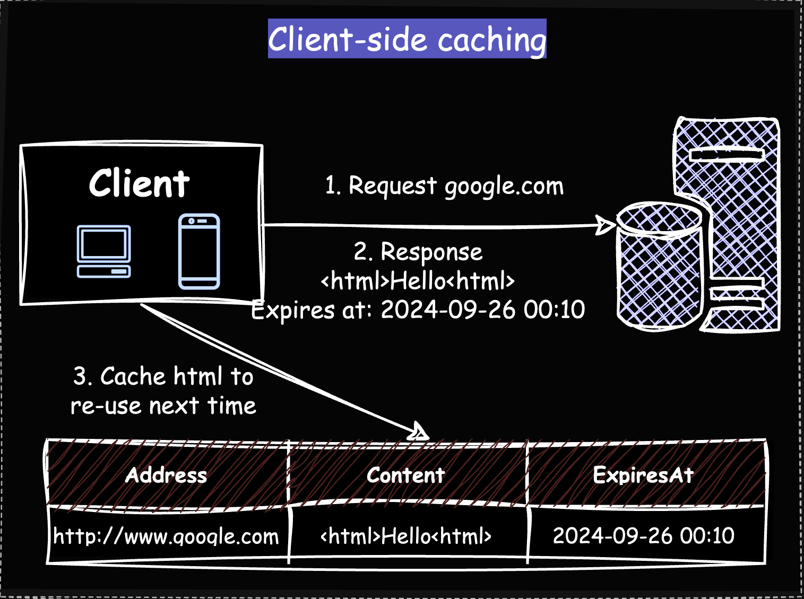
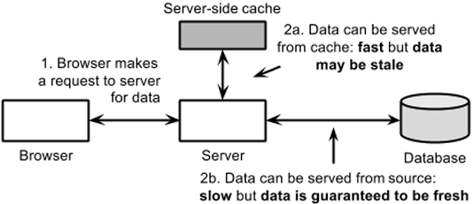
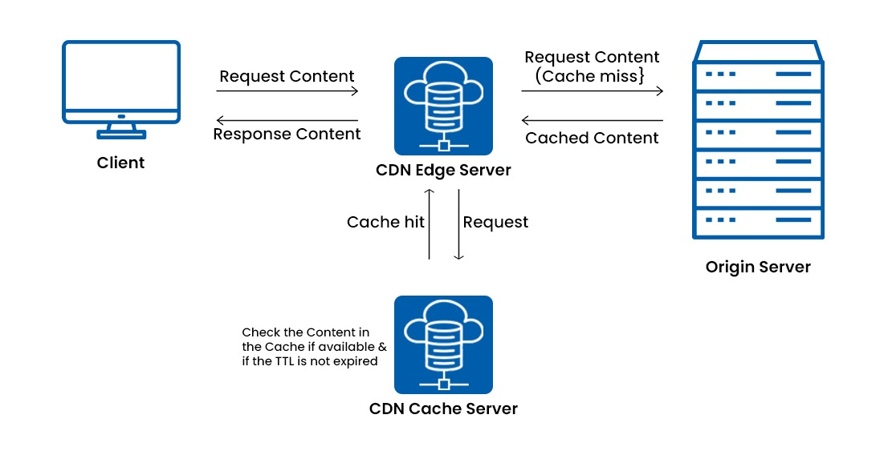
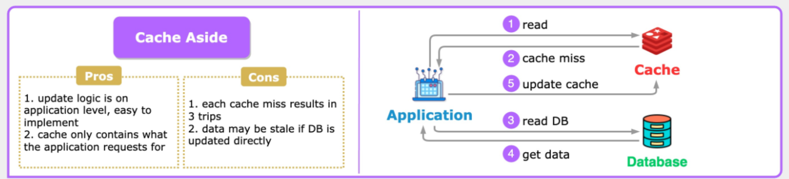
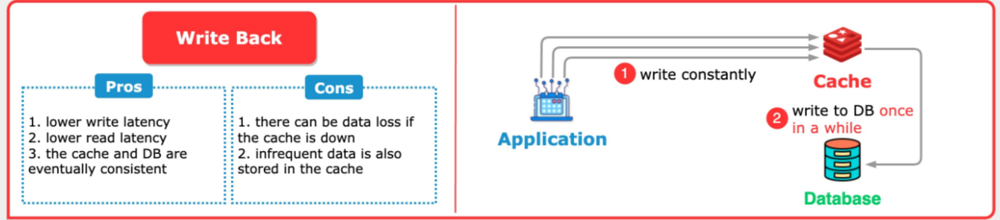
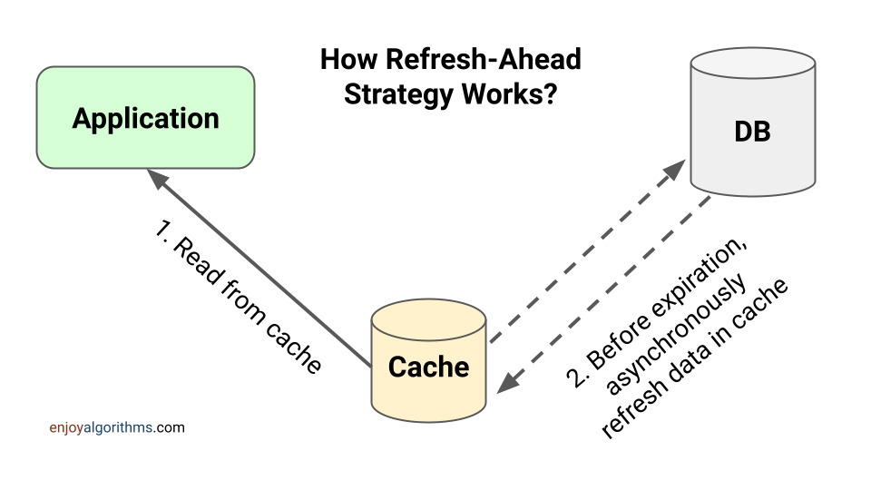
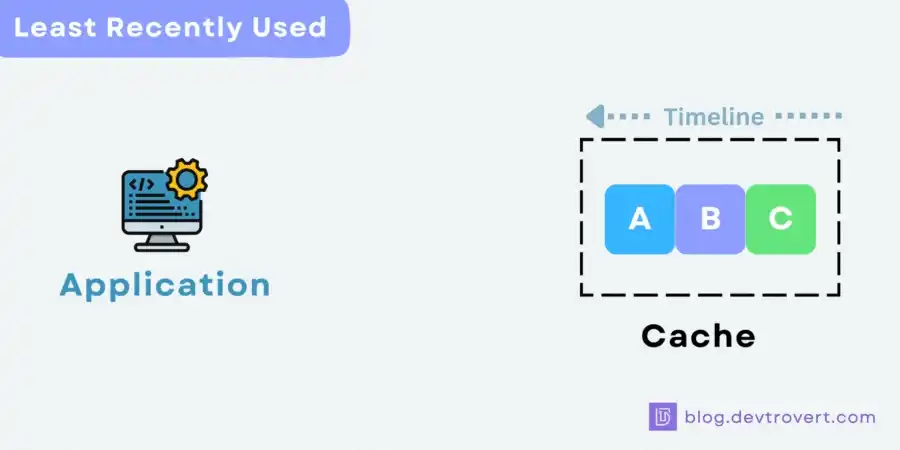
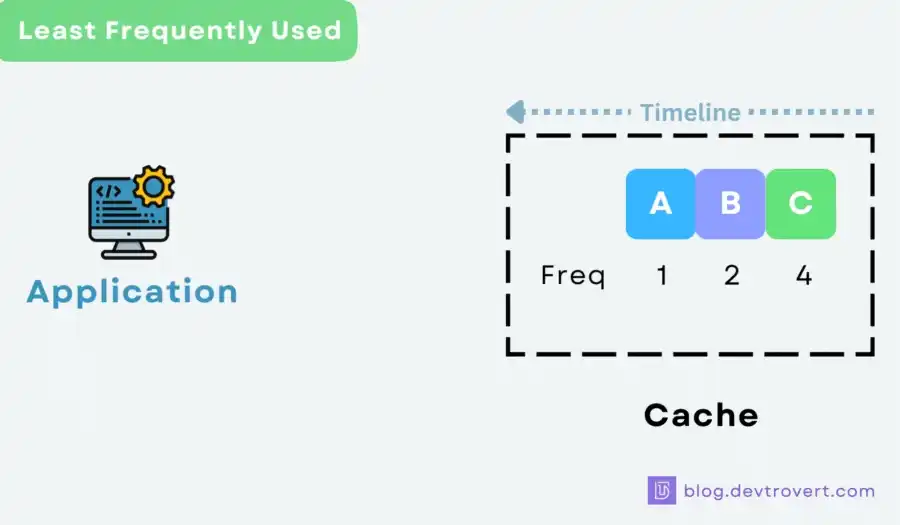
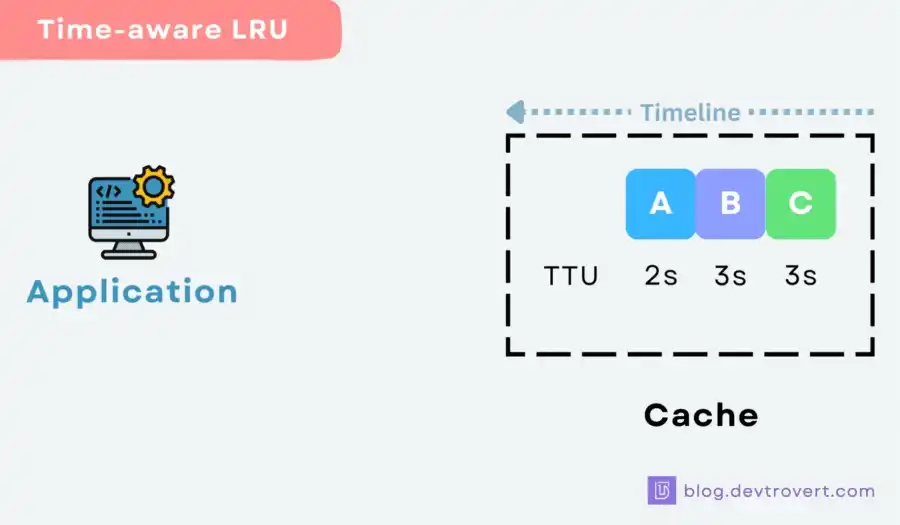
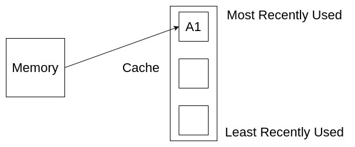

System Design Mastery
Master scalable systems with premium insights
💾 Caching Types, Strategies & Eviction Policies
1️⃣ Types of Caching
1. Client-Side Cache
Storing server responses on the client’s device so that repeated requests for the same resource can be served locally without contacting the server again.
- Data stored on the user’s device or browser.
- Data Stored in: Browser cache, Local storage, Device memory
Example flow:
User (Client) → Client Cache (Browser / App Cache) → (if cache miss) Server → Database
If data exists in cache → server is not called.
Used in: Websites, static resources (images, CSS)

2. Server-Side Cache
Data stored on the server to reduce database calls.
Example tools: Redis, Memcached
Example flow:
Client → Server → Cache → Database
If cache hit → data returned quickly.
Used in: APIs, database query results

3. CDN Cache
CDN
caching stores copies of static content on edge servers closer to users around the world to
deliver content faster.
Instead of every user requesting data from the origin server,
the CDN serves content from the nearest edge server.
Flow:
User → CDN Edge Server → (if cache miss) Origin Server → Database
Example: Cloudflare, AWS CloudFront, Akamai
Used for: Images, videos, static files

4. Database Cache
Database
itself stores frequently accessed queries.
Cache is maintained inside the database engine.
Example: MySQL query cache, PostgreSQL caching
Flow:
Client → Application Server → Database Cache (Query Cache / Buffer Pool) → (if miss) Database Storage
5. Application Cache
Application cache stores frequently used data inside the backend application layer to avoid
repeated database queries.
Cache is close to the application server.
Cache stored
in backend servers using tools like Redis.
Usually stored in: In-memory cache, Redis, Memcached
Flow with application cache:
Client → Server → Application Cache → Database
Quick Summary Table
| Cache Type | Location | Purpose |
|---|---|---|
| Client Cache | User device | Reduce network requests |
| CDN Cache | Edge servers | Faster global delivery |
| Application Cache | Backend servers | Reduce DB queries |
| Server Cache | Server layer | Reduce DB hits |
| Database Cache | Inside DB | Speed up queries |
Real World Example: Opening an Instagram Post
User opens:
https://instagram.com/post/123
System uses multiple caching layers.
Step 1️⃣ Client-Side Cache (Browser / Mobile Cache)
First the app checks local device cache.
Flow:
User → Client Cache
Example cached items:
- Images
- CSS
- JavaScript
- Previously viewed posts
If image exists locally → show instantly.
If not → request goes to network.
Step 2️⃣ CDN Cache
Request goes to nearest CDN edge server.
Flow:
User → CDN Edge Server
Example:
User in India → CDN server in Mumbai.
CDN checks:
- Is post image cached?
If YES → send image immediately.
If NO → fetch from origin server.
Step 3️⃣ Load Balancer / API Server
If CDN doesn't have it, request goes to backend.
Flow:
User → CDN → Load Balancer → Application Server
Load balancer chooses one backend server.
Step 4️⃣ Application Cache (Redis / Memcached)
Server checks application cache.
Flow:
Application Server → Redis Cache
Example cached data:
- Post metadata
- Like counts
- Comments
- User profiles
If found → return instantly.
If not → query database.
Step 5️⃣ Database Cache
Database itself has internal caching.
Flow:
Application Server → Database Cache → Database
Example:
Database may cache frequently used queries like:
SELECT * FROM posts WHERE id=123
If cached → return quickly.
If not → fetch from disk storage.
Step 6️⃣ Database
Final fallback.
Flow:
Database Cache Miss → Database Disk Storage
Database returns data → server stores it in cache layers.
Complete Real System Flow
User
↓
Client-Side Cache (Browser / App)
↓
CDN Cache
↓
Load Balancer
↓
Application Server
↓
Application Cache (Redis)
↓
Database Cache
↓
Database
2️⃣ Caching Strategies
🔹 Cache-Aside (Lazy Loading)
Steps:
- Application checks cache for data.
- If cache hit → return data.
- If cache miss → fetch from database.
- Store data in cache.
- Return data to user.
Used in: Most applications
Advantages:
✔ Cache stores only frequently used data
Disadvantages:
❌
Risk of stale data if DB updates but cache doesn't
❌ Cache inconsistency possible

🔹 Write-Through Cache
Steps:
- Application writes data to cache.
- Cache immediately writes the same data to database.
- Cache and DB stay synchronized.
When data is written:
- Cache updated
- DB updated simultaneously
Advantage:
✔ Cache always fresh
✔ reads are very fast
Disadvantage:
❌
Write
latency increases (two writes)
🔹 Write-Behind (Write-Back)
Steps:
- Application writes data to cache only.
- Cache returns success immediately.
- Cache asynchronously writes to database later.
Database update happens later asynchronously.
Advantage:
✔ Very fast writes
Disadvantages:
❌
Risk of data loss if cache crashes
❌ Database may temporarily have old data

🔹 Read-Through Cache
Application only talks to cache.
The cache automatically fetches missing data from
the
database and returns it to the application.
Steps:
- Application requests data from cache.
- Cache checks if data exists.
- Cache hit → return data to application.
- Cache miss → cache fetches data from database.
- Cache stores fetched data.
- Cache returns data to application.
Advantages:
✔ Simpler for application – app only interacts with
cache
Disadvantages:
❌
Cache dependency increases
❌ If cache fails → application cannot directly access
database
6. Refresh-Ahead Cache
Cache stores frequently accessed data and refreshes it in the background before it expires, so it stays fresh.
Steps:
- Cache stores frequently accessed data.
- Before cache expires, system refreshes data in background.
- Cache always contains fresh data.
Advantages:
✔ Very fast reads
✔ reduces cache misses
Disadvantages:
❌
Extra background processing
❌ More complex to Implement

3️⃣ Cache Eviction Policies
When the cache is full, which data should be removed?
🔹 LRU (Least Recently Used)
Removes data that hasn't been used recently.
Example:
If user hasn’t accessed item for long time → remove it.Most commonly used policy.

🔹 LFU (Least Frequently Used)
Removes data used the least number of times.
Example:
If item accessed only once → remove it.
Useful when access patterns are stable.

🔹 FIFO (First In First Out)
The earliest inserted cache entry is removed first.
It only cares about insertion order, not usage.
Simple but not always optimal.
🔹 TTL (Time To Live)
Data expires after certain
time.
TTL is the amount of time a cached data is allowed to stay in the cache before it
expires and gets removed after expiry.
Example:

4. Random Eviction
Removes a random cache entry.
5. MRU (Most Recently Used)
Removes the most recently used
item
first.
Opposite of LRU

🧠 Summary
Caching improves system performance by storing frequently accessed data in memory, using strategies like cache-aside or write-through and eviction policies such as LRU or LFU when cache capacity is reached.